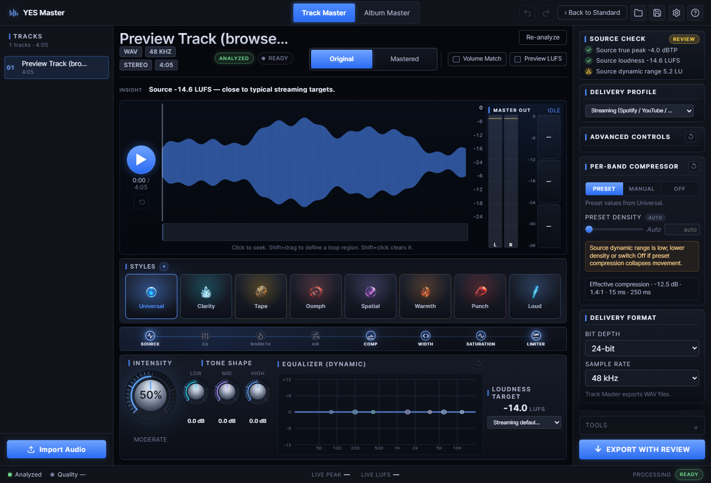

Same core
The phone bridges reuse the shared mastering engine instead of reimplementing DSP in native UI code.
Desktop depth, companion simplicity
Master on the desktop when you want the full room. Keep the simple Standard workflow close on iPhone and Android companions powered by the same shared engine.
The companion apps are a Standard-style path: import, analyze, audition, choose style and loudness, then create a master with the shared engine.
The phone bridges reuse the shared mastering engine instead of reimplementing DSP in native UI code.
Standard mobile export mirrors the desktop Standard recipe: 44.1 kHz / 24-bit WAV at a -1 dBTP ceiling.
Original and Mastered audition stays the center of the workflow, because the ear is still the final gate.

When the track needs detail, desktop Advanced gives you the full surface: visual EQ, width, warmth, compressor modes, delivery profiles, export review, and album mastering.
This concept sells the family without pretending the mobile product promise is final. Desktop is the release lead; mobile follows the shared-engine path.
Universal, Clarity, Tape, and Oomph are the friendly names users can carry from desktop to phone.
 Universal
Universal
 Clarity
Clarity
 Tape
Tape
 Oomph
Oomph